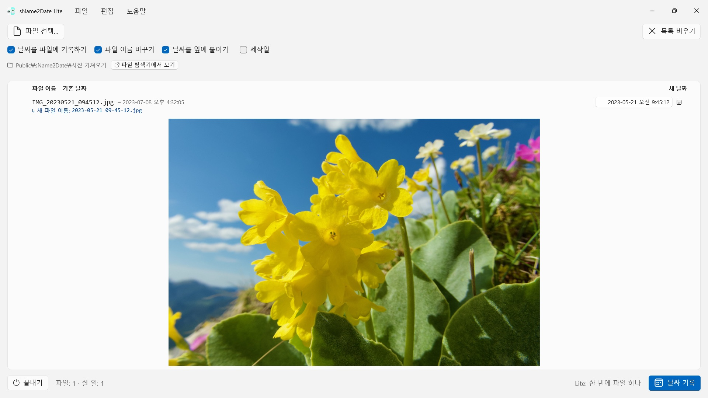
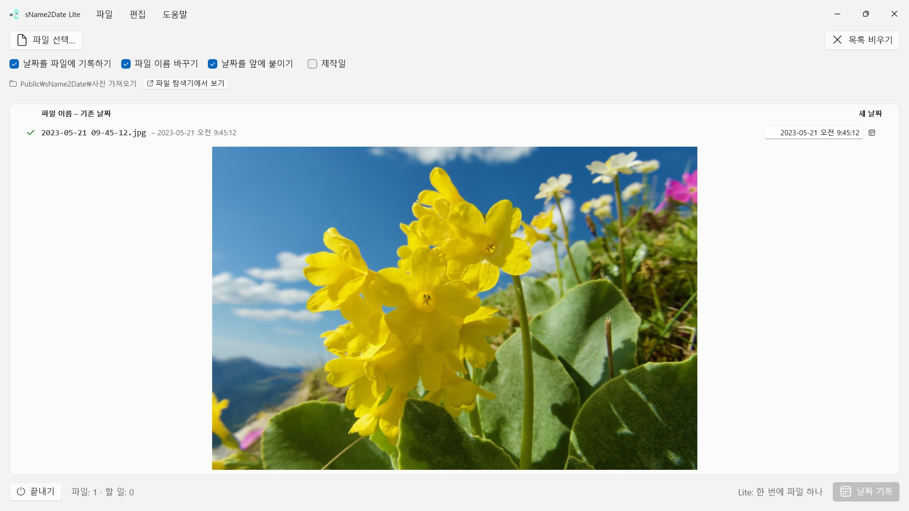

sName2Date Lite
파일 이름에서 날짜를 읽습니다 — 십여 가지 표기, 달 이름은 앱 언어와 영어
무료 · 출시 예정 · Microsoft Store파일 이름에서 날짜를 읽어 사진이나 동영상에 촬영 일시로 기록합니다. 사진 관리 프로그램과 파일 탐색기에서 올바르게 정렬됩니다. 한 번에 파일 하나, 무료, 모든 작업은 Ctrl+Z로 되돌릴 수 있습니다.


많은 사진과 동영상이 날짜를 파일 이름에 담고 있습니다. 녹음 파일이나 PDF 같은 문서도 마찬가지입니다. 하지만 프로그램이 날짜를 찾는 자리는 그곳이 아닙니다. 메신저 대화나 스캐너, 오래된 자료 보관함에서 가져온 사진 한 장은 IMG_20240115_103000.jpg, 휴가 15.01.2024.jpg, 청구서 23112024.pdf 같은 이름을 달고 있고, 어떤 사진 관리 프로그램에서든, 파일 탐색기에서든 오늘 날짜로 표시됩니다.
sName2Date는 파일 이름에서 날짜를 읽어 파일 안에 촬영 일시로 기록합니다. 아직 촬영 일시가 없으면 새로 만들어 넣습니다. PDF처럼 촬영 일시가 없는 파일에는 파일의 생성일과 수정일을 설정합니다. 이 버전은 한 번에 파일 하나를 다루며, 그 파일에 대해서는 모든 것을 할 수 있습니다.
25개 언어: 영어, 독일어, 체코어, 크로아티아어, 네덜란드어, 핀란드어, 프랑스어, 헝가리어, 이탈리아어, 일본어, 한국어, 노르웨이어(보크몰), 페르시아어, 폴란드어, 포르투갈어(브라질 및 포르투갈), 루마니아어, 러시아어, 스페인어, 스웨덴어, 태국어, 터키어, 우크라이나어, 중국어(간체 및 번체). 앱은 Windows 표시 언어를 따릅니다.
인식하는 표기 형식
날짜와 시각의 흔한 표기들을 인식합니다. 예를 들면 다음과 같습니다.
- 2024-01-15 10-30-00
- IMG_20240115_103000
- IMG-20240115-WA0001
- 2024-01-15 · 2024 01 15 · 2024_01_15
- 15.01.2024 · 15-01-2024 · 15.01.24 · 15012024
- January 15 2024 · 15 Jan. 2024 — 글자로 적은 달 이름
- 2016 04 · 04-2016 — 연도와 달만 있는 경우
글자로 적은 달 이름은 앱 언어와 영어로, 긴 형태와 줄인 형태 모두 읽습니다. 한국어는 달을 1월처럼 숫자로 적으므로 글자로 된 달 이름이 없습니다. 따라서 이 규칙은 영어 이름에만 해당하며, 한국어 파일 이름의 날짜는 위에 든 숫자 표기로 적혀 있을 때 인식됩니다.
이름에 날짜만 있으면 시각은 정해진 값으로 채워집니다. 어떤 값을 쓸지는 직접 정합니다. 날짜에서 일까지 빠져 있으면 그달의 1일로 보며, 목록의 해당 줄이 그 사실을 함께 알려 줍니다. 이름에 날짜가 여러 개 있으면 앞선 것이 이깁니다. 그리고 일과 달을 서로 바꿔 읽을 수 있는 경우에는 직접 정합니다. 기본값은 Windows 국가별 형식에서 가져오며, 해당 파일에는 따로 표시가 붙습니다. 조용히 넘겨짚지 않습니다.
이름에 날짜가 아예 없으면 목록의 오른쪽 칸에 직접 입력하면 됩니다. 1826년까지 거슬러 올라갑니다. 현존하는 가장 오래된 사진이 찍힌 해입니다. 그러므로 19세기에 찍혀 스캔된 사진도 어제 찍은 사진과 똑같이 날짜를 붙일 수 있습니다.
무엇이 바뀌는가
기록되는 항목은 EXIF DateTimeOriginal과 DateTimeDigitized, 그리고 TIFF DateTime이며, 동영상과 음성 녹음에서는 컨테이너 안의 생성 일시입니다. 원한다면 파일 자체의 생성일과 수정일도 함께 맞춥니다.
이미지 데이터는 손대지 않습니다. JPEG를 다시 압축하지 않고, 동영상을 다시 인코딩하지 않습니다. 동영상과 음성 녹음에서는 대개 컨테이너의 몇 바이트만 고쳐 쓰므로, 용량이 큰 동영상도 순식간에 끝납니다. 기록한 뒤에는 앱이 날짜를 다시 읽어 확인하며, 줄의 색깔이 날짜가 어디에 들어갔는지 알려 줍니다.
촬영 일시가 파일 자체에 들어가는 형식은 JPEG, TIFF, HEIC(Microsoft의 HEIF 이미지 확장 필요)와 동영상 형식 MP4, MOV, M4V, 그리고 음성 형식 M4A, M4B입니다. PNG, GIF, WebP, AVI와 RAW 사진에는 많은 사진 프로그램이 함께 읽는 XMP 사이드카를 옆에 만듭니다. 해당 줄에는 파란색 체크가 표시됩니다.
촬영 일시를 담을 수 없는 파일도 함께
PDF나 텍스트 파일, 표 계산 문서에는 촬영 일시를 적을 칸 자체가 없습니다. 그래도 목록에는 들어옵니다. 앱은 그런 파일에 파일 자체의 생성일과 수정일을 설정합니다. 날짜가 남을 수 있는 유일한 자리이기 때문입니다. 해당 줄에는 그것이 초록색이 아니라 주황색 체크로 표시됩니다. 그러므로 여기서는 확장자를 가리지 않습니다. PDF, 텍스트, 표 계산, 압축 파일 등 무엇이든 됩니다.
파일에 아예 손대지 않으려면 창 위쪽의 ‘날짜를 파일에 기록하기’ 체크를 해제하면 됩니다. 그러면 앱은 이름만 바꿉니다.
이름도 함께
원하면 앱이 같은 실행에서 파일 이름도 ISO 표기로 고칩니다. 휴가 15.01.2024.jpg는 2024-01-15 12-00-00 휴가.jpg가 됩니다. 이름과 촬영 일시가 같은 것을 말하게 됩니다.
모두 되돌릴 수 있습니다
한 번의 작업은 Ctrl+Z로 온전히 되돌릴 수 있습니다. 촬영 일시, 파일의 시각 정보, 바뀐 파일 이름까지 모두 해당합니다. Ctrl+Y로 다시 실행합니다.
한 번에 더 많이: 정식 버전 sName2Date
정식 버전 sName2Date는 파일 하나가 아니라 폴더 전체를 다룹니다. 폴더를 읽어 들이고, 원하면 하위 폴더까지 모두 포함해 파일마다 찾은 날짜를 보여 주며, 전체를 한 번에 기록합니다. 여행에서 찍은 사진 천 장도 마찬가지입니다. 이미 촬영 일시가 있는 파일은 원하면 건너뜁니다.
파일이 하나뿐이라면 이 버전으로 충분합니다.
내 PC 안에서만
계정 없음, 클라우드 없음, 분석 없음, 광고 없음. 앱은 건네받은 파일만 다룹니다. 언어마다 완전한 도움말이 들어 있습니다.
- Windows 11 이상 필요
- 24개 언어 지원
- 지원: SwiftAppsBavaria@gmx.net
- sName2Date 개인정보 처리방침